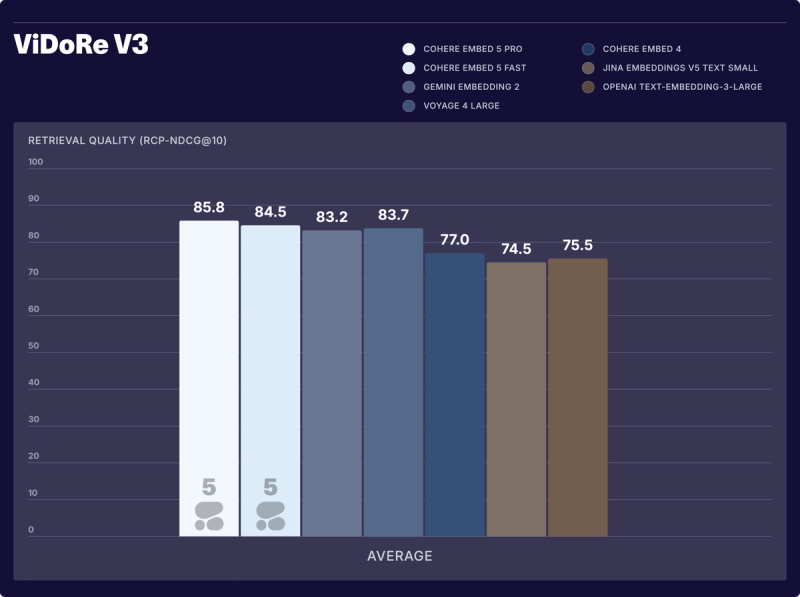
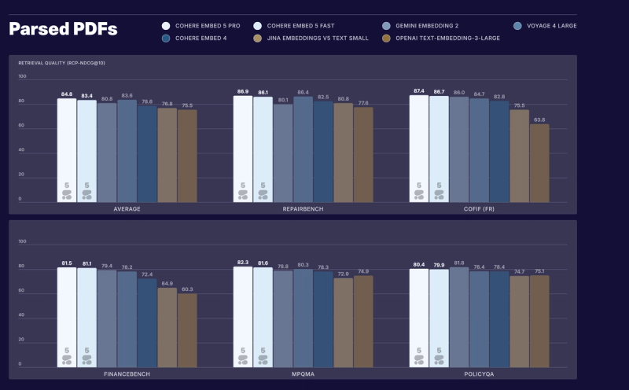
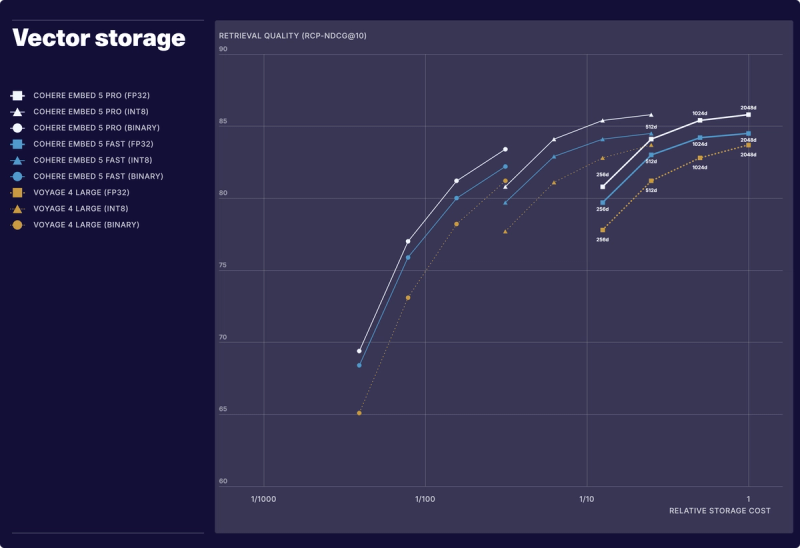

Cohere Embed 5

它解决的不是“多会聊天”，而是检索链路的成本分工
企业 RAG 经常在索引与查询上使用同一个模型。索引成本通常一次性支付，在线查询的延迟却会在每次搜索、每个 Agent 步骤中累积。共享表示空间让 Pro 负责复杂文档的质量，Fast 负责高频 query 的效率。
这并非无条件可互换：文档与查询必须使用相同输出维度；截断、量化、归一化和数据库相似度也要一致。官方说兼容 Matryoshka 截断与 int8，但没有承诺任何任意压缩方式都兼容。
| 项目 | Pro | Fast |
|---|---|---|
| 定位 | 质量优先、离线索引、复杂企业语料 | 低延迟、高频搜索与 Agent 检索 |
| 上下文 | 128K tokens | 128K tokens |
| 输入 | 文本、图像、融合文本+图像 | 文本、图像、融合文本+图像 |
| 语言 | 100+ | 100+ |
| 向量维度 | 2048 / 1536 / 1024 / 768 / 512 / 256 | 同左 |
| 输出格式 | float / int8 / binary | 同左 |
| 发布时文本价格 | $0.12/M tokens | $0.08/M tokens |
| 发布时图像价格 | $0.40/M tokens | $0.40/M tokens |
| 部署 | API / Model Vault / Foundry / SageMaker；支持私有部署 | 同左 |
“支持 self-hosting”不能自动翻译成“HF 已公开下载并自由商用”。本轮没有发现可核验的对应 HF card 或独立训练报告，不编造链接、参数量和授权条件。
Pro 文档 + Fast 查询：到底损失多少？
官方在 40 个 development datasets 上测了文档侧与查询侧的所有配对。将 Pro 文档 + Pro 查询归一化为 100：
| 查询模型 \ 文档索引模型 | Fast 索引 | Pro 索引 |
|---|---|---|
| Fast query | 96.6 | 98.4 |
| Pro query | 97.3 | 100 |
因此“Pro 建库，Fast 查询”平均为 98.4，下降约 1.6%；另一方向为 97.3，下降约 2.7%。这是归一化后的开发集均值，不是任何实际数据库都只下降 1.6% 的保证。均值还可能隐藏少数领域或语言的回归，接入前要看业务失败案例。
指标陷阱：RCP-nDCG@10 不是第一阶段召回率
官方新方法按每个 query 的 relevance criteria 评价检索结果，试图减少固定标签遗漏相关文档的问题。但脚注明确：这要求一个两阶段检索设置，用 embedding similarity 对固定候选集重新排序。因此它主要反映这个候选集内的 reranking quality，不能直接推断全库 ANN 第一阶段 Recall@k。
| 官方结果 | Pro | Fast | 阅读口径 |
|---|---|---|---|
| ViDoRe V3 平均 | 85.8 | 84.5 | 8 个视觉丰富领域；这里评测使用作者整理的 parsed text |
| FinanceBench | 80.1 | 80.0 | 正文金融套件结果；不要与 parsed-PDF 子表混淆 |
| FinQA | 90.0 | 88.8 | 金融文档检索指标，不是直接回答金融题的准确率 |
| ViDoRe Finance | 85.0 | 83.9 | 同一特定金融领域 |
| Parsed PDF 全套均值 | 84.8 | 83.4 | Gemini 1.5 Flash 解析；全套包含图中未展示的数据集 |
| 融合图文 5 数据集均值 | 82.3 | 81.2 | 页面图像 + metadata 的一个向量 |
| 金融 page-image 5 数据集均值 | 77.0 | 73.2 | 图像输入；不能与 parsed text 表直接拼排名 |

同一 FinanceBench 名称在不同输入表示或套件下可出现不同分数。把 parsed text、page image、fused image+metadata 混起来，会把预处理收益错误归到模型。官方全球语言均值也不意味着每种语言都领先：例如中文 Pro 为 82，与 Voyage 4 Large 持平；日语 87，低于该表 Gemini Embedding 2 的 90。
吞吐、价格与向量存储是三笔不同的账
官方给出 Fast 约 377.3 documents/s、Pro 159.7 documents/s，平均约 2.4×。测量覆盖约 200 与 1K tokens 文档，主要是索引效率；它不是 128K 长文档吞吐，也不是每次在线查询延迟改善 2.4×。

仅计算原始向量 payload：
| 表示方式 | 每向量字节 | 相对 2048D FP32 |
|---|---|---|
| 2048D FP32 | 8192 | 1× |
| 1024D int8 | 1024 | 8× 更小 |
| 256D binary | 32 | 256× 更小 |
1 亿个向量对应约 819.2 GB、102.4 GB、3.2 GB（十进制）。这些数值 不含 ANN 图索引、metadata、冗余副本或数据库开销。binary 最省内存但有精度损失，适合第一阶段粗检索再用更高精度重排；不能写成同等质量的免费压缩。
对 Agent Training / RAG 的启发
可以先做一个 2×2 配对实验：Pro/Fast 分别作为 index/query 模型，按语言、表格密度、OCR 噪声和长文档分层，报告第一阶段 Recall、候选集重排 nDCG、最终带引用回答正确率和 p95 query latency。再以 2048 FP32、1024 int8、256 binary 做质量/内存曲线。
上述是阅读后的实验建议，没有在本机执行推理或复现厂商成绩。RCP 判定器的误标与偏置也应抽样人工复查，而不是把新打分方法视为绝对真值。
一手资料与导航
- [S1] Tech Blog：Introducing Embed 5，2026-09-30；评测限制见其脚注 1–3。
- 原始正文与官方图片抓取记录。
- 基模主题索引
- 中文 Poster
📊 相关可视化: Embed 5 中文 Poster